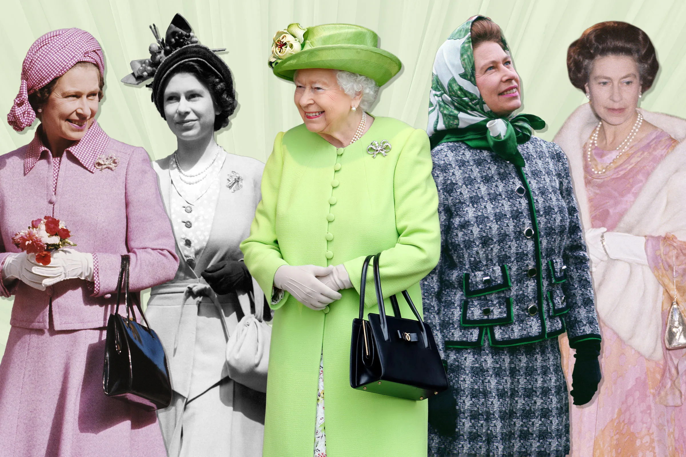
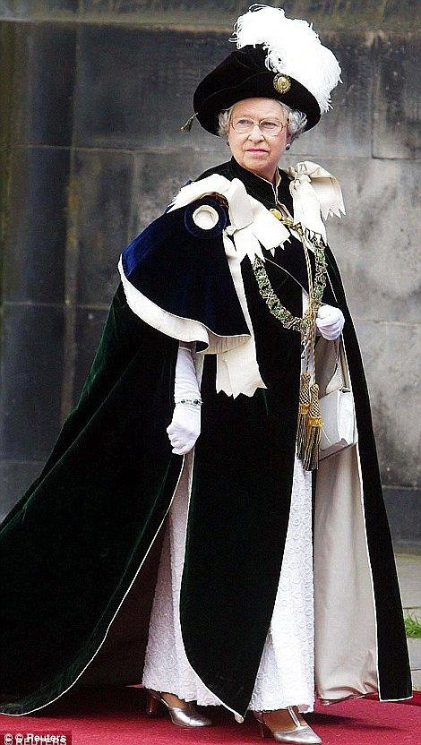

If you didn't know already Queen Elizabeth II was a fashion icon!
She wore some of craziest and coolest outfits over the years and I wanted to dedicate this page to some of my favorites.
Along with some of her most iconic looks.
The Queen and her fablous bright colors.

The evolution of her fashion throught the years.

This look is one of my favorites! She looks like a true monarch with this outfit.